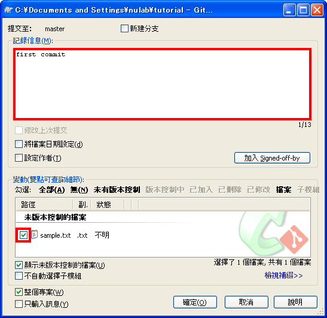
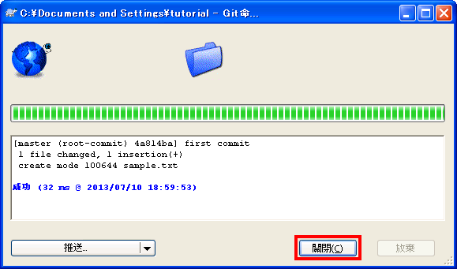
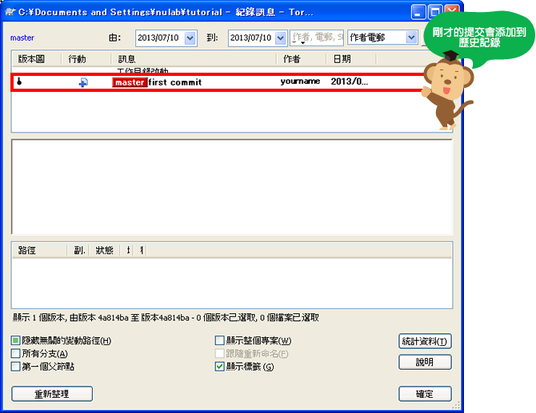
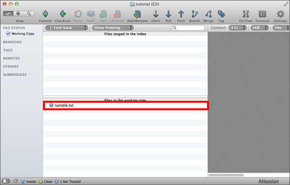
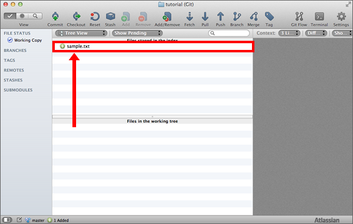
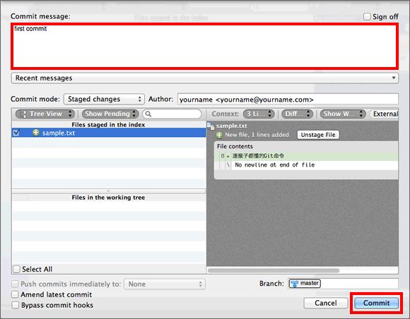
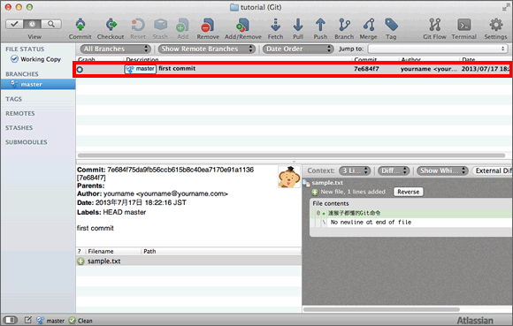
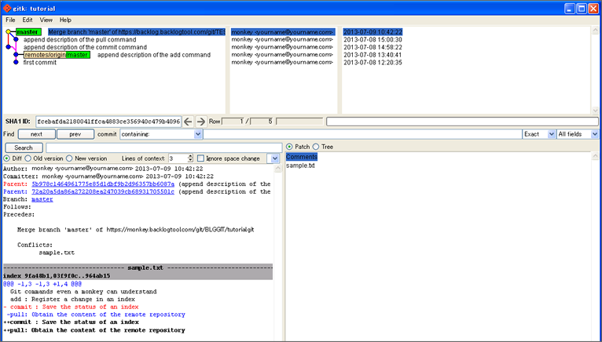

在tutorial目錄新建一個檔案，然後將檔案添加到數據庫。
首先在tutorial目錄裡新添一個名為「sample.txt」的文字檔案。請在檔案裡輸入以下的內容：
連猴子都懂的Git命令
Windows
打開tutorial目錄，對資料夾按右鍵顯示選單，點一下右鍵選單中的Git提交
顯示以下畫面後，在變動過的項目中選擇
sample.txt，在記錄訊息裡輸入提交訊息後，點擊確定。

會顯示以下畫面。如果作業成功，請點一下「關閉」以結束畫面。

按一下右鍵選單TortoiseGit >
記錄。剛才的提交會添加在歷史記錄訊息裡。

在tutorial目錄新建一個檔案，然後將檔案添加到數據庫。
首先在tutorial目錄裡新添一個名為「sample.txt」的文字檔案。請在檔案裡輸入以下的內容：
連猴子都懂的Git命令
Mac
在SourceTree的收藏夾列表畫面，點兩下之前添加的數據庫，將會顯示SourceTree數據庫的操作畫面。數據庫目錄裡若有新添加的檔案或編輯過的檔案，都會顯示在左下方工作目錄的檔案列表中。
而我們剛剛添加的sample.txt檔案也會顯示在這裡。

對要添加到提交的檔案按右鍵，點選Add to
Index，然後選擇的檔案就會移到上方的Files staged in the index。

在這個狀態下，點選工具欄中的
Commit，會顯示以下畫面，輸入提交訊息後點一下 Commit。

提交成功的話，只要點選master分支就會看到剛剛新增的提交。

在tutorial目錄新建一個檔案，然後將檔案添加到數據庫。
首先在tutorial目錄裡新添一個名為「sample.txt」的文字檔案。請在檔案裡輸入以下的內容：
連猴子都懂的Git命令
主控台
在Git管理之下的目錄，可以使用status命令確認工作目錄與索引的狀態喔。
$ git status
執行status命令確認tutorial目錄的狀態。
$ git status
# On branch master
#
# Initial commit
#
# Untracked files:
# (use "git add <file>..." to include in what will be committed)
#
# sample.txt
nothing added to commit but untracked files present (use "git add" to track)
sample.txt還不是歷史記錄追踪的對象，只要將其加入到索引，就可以登錄成為追踪對象。
要將檔案加入到索引，可以使用add
<file>命令。<file>是指向要加入索引的檔案。若要指向多個檔案，可用空白鍵將檔案們分開。
$ git add <file>...
Tips（小撇步 ）
使用「.」，表示可以把當前目錄下所有的檔案加入到索引。
$ git add .
現在讓我們使用status命令確認sample.txt是否已加入索引。
$ git add sample.txt
$ git status
# On branch master
#
# Initial commit
#
# Changes to be committed:
# (use "git rm --cached <file>..." to unstage)
#
# new file: sample.txt
#
sample.txt已加入索引，我們可以準備提交檔案了，請執行commit命令提交，commit命令如下：
$ git commit -m "<提交訊息>"
執行commit命令之後確認status。
$ git commit -m "first commit"
[master (root-commit) 116a286] first commit
0 files changed, 0 insertions(+), 0 deletions(-)
create mode 100644 sample.txt
$ git status
# On branch master
nothing to commit (working directory clean)
status命令顯示沒有其他更新需要提交。
我們來確認一下數據庫的歷史提交記錄，使用log命令來顯示數據庫的歷史提交記錄。
$ git log
commit ac56e474afbbe1eab9ebce5b3ab48ac4c73ad60e
Author: eguchi <eguchi@nulab.co.jp>
Date: Thu Jul 12 18:00:21 2012 +0900
first commit
Note
安裝git的同時也會安裝gitk工具。可以用圖形化介面確認歷史提交記錄。
$ gitk
